南和寺/埼玉県越谷市
埼玉県東部の越谷市、の外れは田んぼとスクラップと錆色に染まった工場が入り乱れる現代日本のリアルな郊外風景が展開されている。
そんな精神的荒野の一画に場違いな赤い門が建っている。
エキゾチックといえば聞こえはいいが、お門違い感が漂う門。額にはCHUA NAM HOAとある。
奥には倉庫を無理矢理お寺に仕立てたような建物。サイディングの壁、トタンの屋根…
周囲は運動公園とその駐車場、そして田んぼと男っぽいテイストの工場。
何だかすべてがチグハグでとてつもない違和感を感じる。
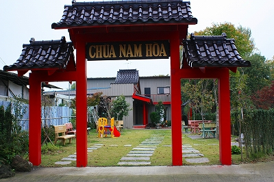 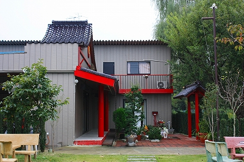
むむむ。
建物の正面に回り込んでみる。
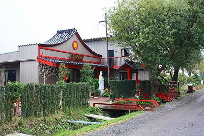
こちらの方がややお寺っぽい眺めではある。あくまでも横から見たよりは、ということですが。
お堂（らしき建物）の正面には「南和寺」とある。
そう、ここはベトナム仏教のお寺なのだ。
歴史的に中国の影響を色濃く受けたベトナムではインドシナ地域の国の中では例外的に大乗仏教が広く信仰されている。
このお寺ももちろん大乗仏教のお寺で、その意味では極めてスタンダードなベトナム仏教のお寺といえよう。
先程山門にあったCHUA NAM HOA だがCHUAが寺、NAMが南、HOAが和。
また、正面の門にはNAM HOA TUと表記されているがTUは「寺」の中国語読み。
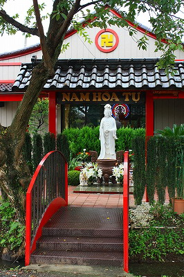
用水にかかる鉄の太鼓橋が思いがけずお寺っぽかったりもする。
チョット緊張しつつ中に入ってみる。
大理石の真っ白な観音サマがお出迎え。
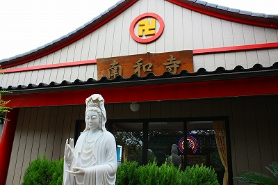
…っと観音サマの後ろに光り輝くのは電飾光背じゃないの。
おお〜、一気にベトナムムードが盛り上がってきますな〜！
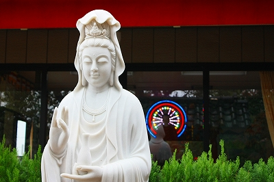
ベトナム人らしき方がいたので一声かけて参拝させてもらう。
内部は普通の事務所か住居っぽい造りだがカーテンを掛けたり菩提樹の絵を描いたりして一生懸命「お寺っぽさ」を出そうとしている。
その姿勢にちょっぴり感動。
そしてその中央には仏サマが鎮座している。
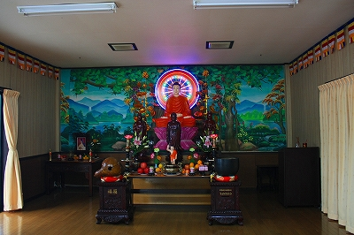 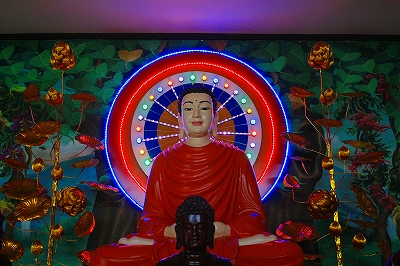
もちろん光背は電飾タイプ。
そしてベトナムのほとんどの仏像がそうであるように表面がツヤツヤピカピカ仕上げ。
祭壇には花火のような長いお線香が手向けられている。
最初は何かと違和感アリアリだったが、いざ阿弥陀サマの前に座っていると何だかベトナムにいるような気分になってくる。
恐らく中国産かベトナム産か判らないが長い線香独特のいがらっぽい香りがそうさせるのだろう。
どこからかバイクの騒音が聞こえてきそうだ。
ちなみにベトナム本国で見た仏像はこんな感じ。もちろん両方とも激しい電飾イルミネーション付き。
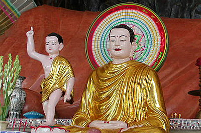 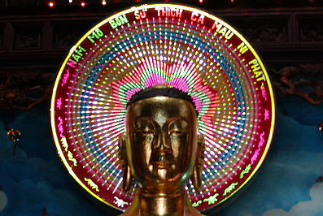
ベトナムのお寺の詳しいハナシはこちら↓越南珍寺劇場をご覧下さい。

…さて、一瞬サイゴンに幽体離脱した魂をサイタマに戻しますよ〜。
本尊の前には天上天下唯我独尊像。これはお釈迦サマが生まれた姿でベトナム仏教では必須の人気アイテム。
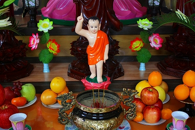
供え物の果物の鮮度からして頻繁にお参りはしているようだ。線香あがってるし。
部屋の隅には別のミニ祭壇。
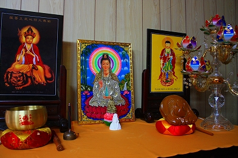
真ん中の観音サマは電源を入れると光背が光って動くタイプ。
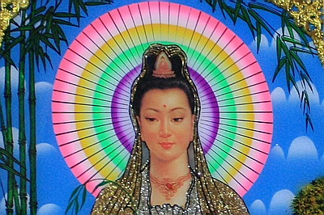
ホーチミンの仏具屋や市場でこのような仏画は何度か見かけた。
観音サマのお顔がやけにお色気ムンムンなのが気になるが、それ以上に気になるのが観音サマの前にある白い半身像…
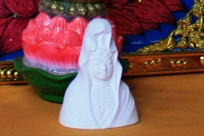
あ、大船観音だ！
さらに本尊脇にあった小さな祭壇。
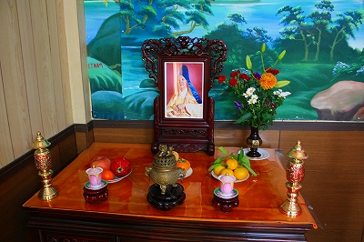
これはベトナムか中国の高僧なのだろう。
どなたか存じ上げませんが観音サマやお地蔵さんの仏画にはあがっていなかった果物がお供えしてあるところから勘案するとさぞかし立派なお坊サマなんでしょう。
参拝を終えて先程のベトナム人らしき人と茶飲み話。
いわく
この寺は2006年頃に建てられたものらしい。
日曜日には近在のベトナムの人が参拝に来るらしい。
正月には関東全域のベトナムの人が集まるらしい。
ベトナム正月のテト（旧正月）ではなく日本の正月に集まるらしい。何故ならテトだからといって日本の会社は休みをくれないから。
想像していたよりワイドな活動をしているみたい。
かつてベトナムで寺巡りをした由を説明し色々とお寺話に花が咲いたが、いくら説明しても私を「ベトナム語の話せないベトナム人」だと思っていたみたい。隣でゲームボーイをやっていたベトナム人のチビッコにはお兄ちゃん（お、オレ「お兄ちゃん」か！）何で日本語しか話せないの？と真顔で聞かれる始末。ベトナム顔なのかな〜、俺。
庭に出るとコンクリのベンチが幾つか置かれていた。
この人研ぎベンチもベトナムのお寺でよく見かけたな〜。こういう細かいところが妙にベトナムっぽいのだ。
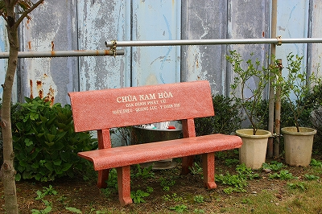
でも門から外を見ればハードな錆色リアルジャパニーズワールド。
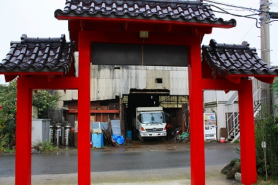
くどいようだが立地条件としてはとてもお寺が建つような場所ではないのですよ。
異国の地でベトナム仏教を信仰するそのありようは希少生物が異なる環境で生存していくように弱々しい。
その弱々しさの中にも同化するでもなく対立するでもない中で確立されていく彼らのアイデンティティを感じざるを得ないのであった。
日本の仏教がハワイや南米などで根付いていく様を逆照射しているようで実に興味深かった。